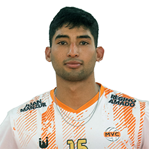
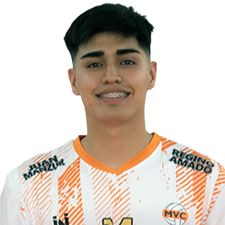

LIGA ARGENTINA
VOLEIBOL
LISTA DE JUGADORES DE MONTEROS
| Nombre | Nº | Apellido y Nombre | Posicion | Fecha de Nacimiento | Altura |
|---|---|---|---|---|---|
| 1 | Mansilla Máximo | Punta Receptor | 02-09-2000 | 180 cm | |
| 2 | Urchevich Pablo | Armador | 30-04-2001 | 185 cm | |
|  | 3 | Luna Slaibe Karim | Central | 10-09-2002 | 198 cm |
|  | 4 | Moreno Ottino Samuel | Punta Receptor | 19-04-2004 | 185 cm |
| 5 | Díaz José Augusto | Libero | 29-04-2004 | 170 cm | |

|
6 | Ponce Reinhold Juan Ignacio | Opuesto | 07-01-2000 | 190 cm |